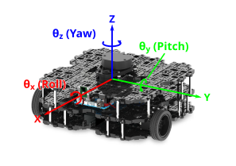
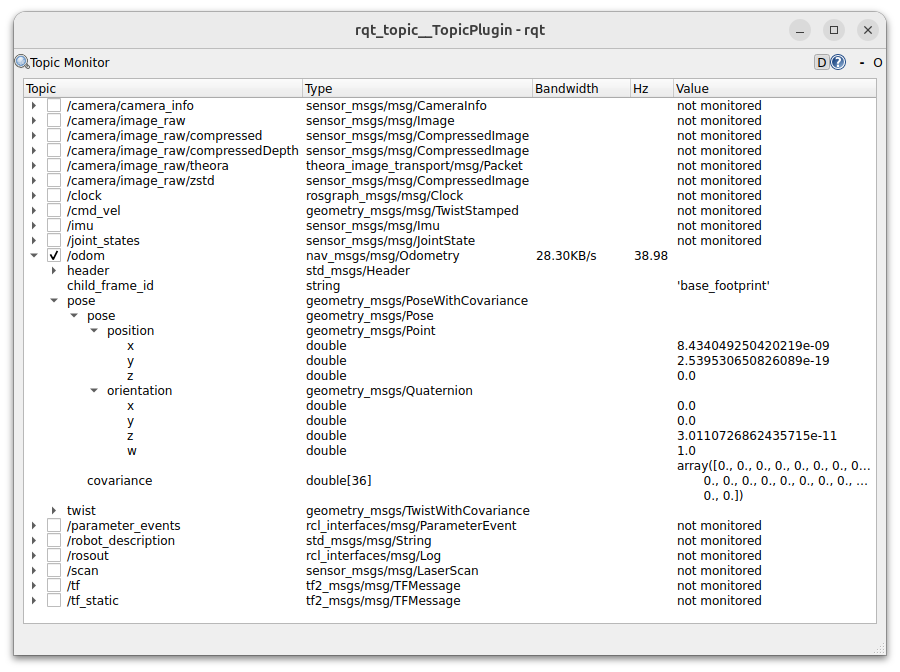
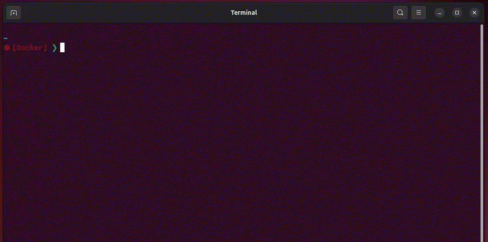
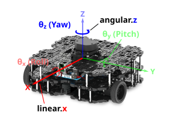

Lab 2: Odometry & Navigation
Introduction¶
In Lab 2 we'll learn how to control a ROS robot's position and velocity from both the command line and through ROS Nodes. We'll also learn how to interpret the data that allows us to monitor a robot's position in its physical environment (odometry). The things covered here form the basis of robot navigation in ROS, from simple open-loop methods to more advanced closed-loop control (both of which we will explore).
Getting Started¶
Step 1: Launch your ROS 2 Environment
You should now have access to ROS 2 via a Linux terminal instance. We'll refer to this terminal instance as TERMINAL 1.
Step 2: Launch VS Code
It's also worth launching VS Code now, so that it's ready to go for when you need it later on.
Step 3: Make Sure The Course Repo is Up-To-Date
In Lab 1 you should have downloaded and installed The Course Repo into your ROS environment. If you haven't done this yet then go back and do it now. If you have already done it, then it's worth just making sure it's all up-to-date, so run the following command in TERMINAL 1 now to do so:
Then build with Colcon:
And finally, re-source your environment:
Warning
If you have any other terminal instances open, then you'll need run source ~/.bashrc in these too, in order for any changes made by the Colcon build process to propagate through to these as well.
Step 4: Launch a Waffle Simulation
In TERMINAL 1 enter the following command to launch a simulation of a TurtleBot3 Waffle in an empty world:
A Gazebo simulation window should open and within this you should see a TurtleBot3 Waffle in empty space.
Odometry¶
Odometry is a process of monitoring a robot's position and orientation in an environment, which is essential for robot navigation. The position and orientation of a robot is referred to as its pose. A robot's pose is 3-dimensional, and is therefore defined in terms of three "Principal Axes": X, Y and Z. In the context of our TurtleBot3 Waffles, these axes and the motion about them are defined as follows:

Not all the above positions and orientations apply to our Waffles, and we'll explore this further below.
Odometry In Action¶
Recall from Part 1 the command that we can use to list all the topics that are available on our robot:
You should see /odom in this list, which is where our robot's Odometry data is published. Run the ros2 topic command again, but this time with an additional -t option:
Look for /odom again in the list, and you will now notice that the interface definition is provided in square brackets alongside the topic name:
Having established the data structure, let's explore the actual data now, using rqt.
Exercise 1: Exploring Odometry Data¶
-
In a new terminal instance (TERMINAL 2) use the following command to launch the RQT Topic Monitor:
Topic Monitor should launch with a list of active topics matching the topic list from the
ros2 topic listcommand that you ran earlier. -
Check the box next to
/odomand click the arrow next to it to expand the topic and reveal four base fields. -
Expand the
posefield, and then the furtherposefield within that. This should reveal two further fields:positionandorientation.Expand both of these to reveal the data being published to the three position (
x,yandz) and four orientation (x,y,zandw) values.
-
Next, launch a new terminal instance, we'll call this one TERMINAL 3. Arrange this next to the
rqtwindow, so that you can see them both side-by-side. -
In TERMINAL 3 launch the
teleop_keyboardnode as you did in Part 1: -
Enter A a couple of times to make the robot rotate on the spot. Observe how the odometry data changes in Topic Monitor.
-
Now press the S key to halt the robot, then press W a couple of times to make the robot drive forwards.
-
Now press D a couple of times and your robot should start to move in a circle.
-
Press S in TERMINAL 3 to stop the robot (but leave the
teleop_keyboardnode running). Then, press Ctrl+C in TERMINAL 2 to close downrqt. -
Let's look at the Odometry data differently now. With the robot stationary, use
ros2 run(in TERMINAL 2) to run a Python node from theexamplespackage: -
Now (using the
teleop_keyboardnode in TERMINAL 3) drive your robot around again, keeping an eye on the outputs that are being printed by therobot_pose.pynode in TERMINAL 2 as you do so.The output of the
robot_pose.pynode shows you how the robot's position and orientation (i.e. "pose") are changing in real-time as you move the robot around. The"initial"column tells us the robot's pose when the node was first launched, and the"current"column show us what its pose currently is. The"delta"column then shows the difference between the two. -
Press Ctrl+C in TERMINAL 2 and TERMINAL 3, to stop the
robot_pose.pyandteleop_keyboardnodes.
Odometry Explained¶
Hopefully you're starting to understand what Odometry is now, but let's dig a little deeper using some key ROS command line tools again. IN TERMINAL 2:
This provides information about the interface used by this topic:
We can find out more about this interface using the ros2 interface show command:
Look down the far left-hand side to identify the four base fields of the interface (the fields that are not indented):
| # | Field Name | Field Type |
|---|---|---|
| 1 | header |
std_msgs/Header |
| 2 | child_frame_id |
string |
| 3 | pose |
geometry_msgs/PoseWithCovariance |
| 4 | twist |
geometry_msgs/TwistWithCovariance |
We saw all these in rqt earlier. As before, its item 3 that's of most interest to us...
Pose¶
# Estimated pose that is typically relative to a fixed world frame.
geometry_msgs/PoseWithCovariance pose
Pose pose
Point position
float64 x
float64 y
float64 z
Quaternion orientation
float64 x
float64 y
float64 z
float64 w
float64[36] covariance
Within the pose base field we have two subfields: pose and covariance:
| # | Field Name | Field Type |
|---|---|---|
| 1 | pose |
Pose |
| 2 | covariance |
float64[36] |
It's the pose subfield that we're most interested in here, which contains two further subfields called position and orientation:
| # | Field Name | Field Type |
|---|---|---|
| 1 | position |
Point |
| 2 | orientation |
Quaternion |
-
positionTells us where our robot is located in 3-dimensional space. This is expressed in units of meters.
-
orientationTells us which way our robot is pointing in its environment. This is expressed in units of Quaternions, which is a mathematically convenient way to store data related to a robot's orientation (it's a bit hard for us humans to understand and visualise this though, so we'll talk about how to convert it to a different format later).
Pose is defined relative to an arbitrary reference point, typically where the robot was when it was turned on, or the origin of a simulated world. On our real TurtleBot3 Waffle robots, it is determined from:
- Data from the Inertial Measurement Unit (IMU) on the OpenCR board
- Data from both the left and right wheel encoders
- A kinematic model of the robot
All the above information can then be used to calculate (and keep track of) the distance travelled by the robot from its pre-defined reference point using a process called "dead-reckoning."
What are Quaternions?¶
Quaternions represent the orientation of something in 3 dimensional space1, as we can observe from the structure of the nav_msgs/msg/Odometry ROS interface, there are four fields associated with this:
For us, it's easier to think about the orientation of our robot in a "Euler Angle" representation, which tell us the degree of rotation about the three principal axes (as discussed above):
- \(\theta_{x}\): The angular position about the X-axis, aka "Roll"
- \(\theta_{y}\): The angular position about the Y-axis, aka "Pitch"
- \(\theta_{z}\): The angular position about the Z-axis, aka "Yaw"
Fortunately, the maths involved in converting between these two orientation formats is fairly straight forward. The angular position about the Z-axis (aka "Yaw"), for example, is calculated as follows:
Where \(\theta_{z}\) is the yaw angle (in radians), and \(w\), \(x\), \(y\) and \(z\) are the quaternion components of a robot's orientation \(w\) being the scalar (real) part and \(x\), \(y\) and \(z\) being the vector parts.
Which Pose Values Apply to our Waffles?¶
Referring back to the three principal axes from earlier:
You can also see here that our TurtleBot3 has two motors that allow it to move. As a result of this, it can only move in a 2D plane and so its pose can be fully represented by just 3 odometry terms in total:
- \(x\) & \(y\): the 2D coordinates of the robot in the X-Y plane
- \(\theta_{z}\): the angle of the robot about the Z-axis (yaw)
(unfortunately, it can't fly!)
Odometry Data as a Feedback Signal¶
Odometry data can be really useful for robot navigation, allowing us to keep track of where a robot is, how it's moving and how to get back to where we started. We therefore need to know how to use this data effectively within our Python nodes, and we'll explore this now.
Exercise 2: Creating a Python Node to Process Odometry Data¶
In Lab 1 we learnt how to create a package and build simple Python nodes to publish and subscribe to messages on a topic. In this exercise we'll build a new subscriber node, much like we did previously, but this one will subscribe to the /odom topic that we've been talking about above. We'll also create a new package called part2_navigation for this node to live in!
-
First, head to the
srcdirectory of your ROS 2 workspace in TERMINAL 2: -
Clone the ROS 2 Package Template:
-
Run the
init_pkg.shscript within this to initalise that package with the name "part2_navigation": -
Then navigate into the new package using
cd: -
The subscriber that we will build here will have a similar structure to the subscriber that we built in Part 1. As a starting point, copy across the
subscriber.pyfile from yourpart1_pubsubpackage using thecpcommand: -
Next, head to the following page for step-by-step instructions on how to build the odometry subscriber:
Building the odom_subscriber.pynode -
Now, declare the
odom_subscriber.pynode as an executable in theCMakeLists.txt: -
Head back to the terminal and use Colcon to build the package (including the new
odom_subscriber.pynode). This is a three-step process, that you must always follow:-
Navigate to the root of the ROS 2 workspace:
-
Build your package using
colcon: -
And finally, re-source the
.bashrc:
-
-
Now we're ready to run this! Do so using
ros2 runand see what it does: -
Having followed all the steps, the output from your node should be similar to that shown below:

-
Observe how the output (the formatted odometry data) changes while you move the robot around using the
teleop_keyboardnode in TERMINAL 3. - Stop your
odom_subscriber.pynode in TERMINAL 2 and theteleop_keyboardnode in TERMINAL 3 by entering Ctrl+C in each of the terminals.
Basic Navigation: Open-loop Velocity Control¶
In order to change our robot's pose, we need to apply velocity to make it move. We learnt about this in Part 1, but let's look at it all in a bit more detail now.
We know that we can use the /cmd_vel topic to publish velocity commands to our robot. Let's remind ourselves how these velocity commands must be structured:
This tells us that the data that is transmitted on the /cmd_vel topic is of the geometry_msgs/msg/TwistStamped interface type.
We also learnt how to find out more about this particular interface (using the ros2 interface show command):
std_msgs/Header header
builtin_interfaces/Time stamp
int32 sec
uint32 nanosec
string frame_id
Twist twist
Vector3 linear
float64 x
float64 y
float64 z
Vector3 angular
float64 x
float64 y
float64 z
There are two base fields in this data structure:
| # | Field Name | Data Type |
|---|---|---|
| 1 | header |
std_msgs/Header |
| 2 | twist |
Twist |
Each of these base fields are comprised of further subfields. It's the twist field that's of most interest to us, and this comprises two further subfields:
| # | Field Name | Data Type |
|---|---|---|
| 1 | linear |
Vector3 |
| 2 | angular |
Vector3 |
Each of these contains 3 further subfields: x, y and z:
| # | Field Name | Data Type |
|---|---|---|
| 1 | x |
float64 |
| 2 | y |
float64 |
| 3 | z |
float64 |
Velocity Commands¶
There are therefore six velocity fields that we can assign values to when sending velocity commands to a ROS robot: two velocity types, each with three velocity components:
| Velocity Type | Component 1 | Component 2 | Component 3 |
|---|---|---|---|
linear |
x |
y |
z |
angular |
x |
y |
z |
These relate to a robot's six degrees of freedom (DOFs), and velocity commands are therefore formatted to give a ROS Programmer the ability to ask a robot to move in any one of its six DOFs.
| Component (Axis) | Linear Velocity | Angular Velocity |
|---|---|---|
| X | "Forwards/Backwards" | "Roll" |
| Y | "Left/Right" | "Pitch" |
| Z | "Up/Down" | "Yaw" |
The Degrees of Freedom of our Waffles¶
Recall (again) our robot's "Principal Axes" and the motion about them:
As discussed above, our Waffles only have two motors. These two motors can be controlled independently (in what is known as a "differential drive" configuration), which ultimately provides it with a total of two degrees of freedom overall, as highlighted below.

When issuing velocity commands to our Waffles therefore, only two (of the six) velocity command fields are applicable: linear velocity in the x-axis (Forwards/Backwards) and angular velocity about the z-axis (Yaw).
| Principal Axis | Linear Velocity | Angular Velocity |
|---|---|---|
| X | "Forwards/Backwards" | |
| Y | ||
| Z | "Yaw" |
Maximum Velocity Limits
Keep in mind (while we're on the subject of velocity) that our TurtleBot3 Waffles have maximum velocity limits:
| Velocity Component | Upper Limit | Units |
|---|---|---|
| Linear (in the X axis) | 0.26 | m/s |
| Angular (about the Z axis) | 1.82 | rad/s |
Exercise 3: Controlling Velocity with the ROS 2 CLI¶
Warning
Make sure that you've stopped the teleop_keyboard node before starting this exercise!
We can use the ros2 topic pub command to publish data to a topic from a terminal by using the command in the following way:
As discussed above, the /cmd_vel topic is expecting interface messages containing linear and angular velocity data, each with x, y and z values associated with them. We can compose these messages in a terminal and publish them with the ros2 topic pub command, provided we take care to format the messages correctly to conform with the geometry_msgs/msg/TwistStamped data structure.
-
In TERMINAL 3 enter the following, this will end up being quite a long command, so let's break it down a little:
-
Start with the desired subcommand of
ros2 topic: -
Next comes the name of the topic that we want to publish to:
-
Next, we define the interface type that this topic uses. Start typing this and then enter the Tab key where shown, and it should autocomplete for you:
Which should autocomplete the interface type for you:
-
Finally, provide the values to be published, which must be formatted according to the interface definition (as we established earlier):
-
-
Scroll back through the message using the Left key on your keyboard and then edit the values of the various fields, as appropriate.
First, define some values that would make the robot rotate on the spot.
-
Enter Ctrl+C in TERMINAL 3 to stop the message from being published.
Notice that the robot carries on moving even when you stop the
ros2 topic pubprocess...In order to make the robot actually stop, we need to publish a new message containing alternative velocity commands.
-
In TERMINAL 3 press the Up key on your keyboard to recall the previous command, but don't press Enter just yet! Now press the Left key to track back through the message and change the velocity field values back to
0.0in order to now make the robot stop. -
Once again, enter Ctrl+C in TERMINAL 3 to stop the publisher from actively publishing new messages, and then follow the same steps as above to compose another new message to now make the robot move in a circle.
-
Enter Ctrl+C to again stop the message from being published, publish a further new message to stop the robot, and then compose (and publish) a message that would make the robot drive in a straight line.
-
Finally, stop the robot again!
Exercise 4: Creating a Python Node to Make a Robot Move in a circle¶
Controlling a robot from the terminal (or by using the teleop_keyboard node) is all well and good, but what about if we need to implement some more advanced control or autonomy?
We'll now learn how to control the velocity of our robot programmatically, from a Python Node. We'll start out with a simple example to achieve a simple velocity profile (a circle), but this will provide us with the basis on which we can build more complex velocity control algorithms (which we'll look at in the following exercise).
In Part 1 we built a simple publisher node, and this one will work in much the same way, but this time however, we need to publish Twist type messages to the /cmd_vel topic instead...
-
In TERMINAL 2, ensure that you're located within the
scriptsfolder of yourpart2_navigationpackage (you could usepwdto check your current working directory).If you aren't located here then navigate to this directory using
cd. -
Create a new file called
... and make this file executable using themove_circle.py:chmodcommand (as we did in Part 1). -
The task is to make the robot move in a circle with a path radius of approximately 0.5 meters.
Follow the instructions on the following page for building this:
Building the move_circle.pynode -
Next (hopefully you're getting the idea by now!), declare the
move_circle.pynode as an executable in thepart2_navigation/CMakeLists.txtfile: -
Finally, head back to TERMINAL 2 and use Colcon to build the new node alongside everything else in the package, using the same three-step process as before:
-
First:
-
Then:
-
And finally, re-source again:
-
-
Run this node now, using
ros2 runand see what happens:Head back to the Gazebo simulation and watch as the robot moves around in a circle of 0.5-meter radius!
-
Once you're done, enter Ctrl+C in TERMINAL 2 to stop the
move_circle.pynode.
 !
!Exercise 5: Implementing a Shutdown Procedure¶
Clearly, our work on the move_circle.py node isn't quite done. When we terminate our node we'd expect the robot to stop moving, but this (currently) isn't the case.
You may have also noticed (with all the nodes that we have created so far) an error traceback in the terminal, every time we hit Ctrl+C.
None of this is very good, and we'll address this now by modifying the move_circle.py file to incorporate a proper (and safe) shutdown procedure.
-
Return to the
move_circle.pyfile in VS Code. -
First, we need to add an import to our Node:
You'll see what this is for shortly...
-
Then move on to the
__init__()method of yourCircle()class.Add in a boolean flag here called
shutdown:... to begin with, we want this to be set to
False. -
Next, add a new method to your
Circle()class, calledon_shutdown():def on_shutdown(self): self.get_logger().info( "Stopping the robot..." ) self.my_publisher.publish(TwistStamped()) # (1)! self.shutdown = True # (2)!- All velocities within the
Twist(Stamped)message class are set to zero by default, so we can just publish this as-is, in order to ask the robot to stop. - Set the
shutdownflag to true to indicate that a stop message has now been published.
- All velocities within the
-
Finally, head to the
main()function of the script. This is where most of the changes need to be made...def main(args=None): rclpy.init( args=args, signal_handler_options=SignalHandlerOptions.NO ) # (1)! move_circle = Circle() try: rclpy.spin(move_circle) # (2)! except KeyboardInterrupt: # (3)! print( f"{move_circle.get_name()} received a shutdown request (Ctrl+C)." ) finally: move_circle.on_shutdown() # (4)! while not move_circle.shutdown: # (5)! continue move_circle.destroy_node() # (6)! rclpy.shutdown()-
When initialising
rclpy, we're requesting for ourmove_circle.pynode to handle "signals" (i.e. events like a Ctrl+C), rather than lettingrclpyhandle these for us. Here we're using theSignalHandlerOptionsobject that we imported fromrclpy.signalsearlier. -
We set our node to spin inside a Try-Except block now, so that we can catch a
KeyboardInterrupt(i.e. a Ctrl+C) and act accordingly when this happens. -
On detection of the
KeyboardInterruptwe print a message to the terminal. After this, the code will move on to thefinallyblock... -
Call the
on_shutdown()method that we defined earlier. This will ensure that a STOP command is published to the robot (via/cmd_vel). -
This
whileloop will continue to iterate until our booleanshutdownflag has turnedTrue, to indicate that the STOP message has been published. -
The rest is the same as before...
... destroy the node and then shutdown
rclpy.
-
-
With all this in place, run the node again now (
ros2 run ...).Now, when you hit Ctrl+C you should find that the robot actually stops moving. Ah, much better!
Odometry-based Navigation¶
Over the course of the previous two exercises we've created a Python node to make our robot move using open-loop control. To achieve this we published velocity commands to the /cmd_vel topic to make the robot follow a circular motion path.
Questions
- How do we know if our robot actually achieved the motion path that we asked for?
- In a real-world environment, what external factors might result in the robot not achieving its desired trajectory?
Earlier on we also learnt about Robot Odometry, which is used by the robot to keep track of its position and orientation (aka Pose) in the environment. As explained earlier, this is determined by a process called "dead-reckoning," which is only really an approximation, but it's a fairly good one in any case, and we can use this as a feedback signal to understand if our robot is moving in the way that we expect it to.
We can therefore build on the techniques that we used in the move_circle.py exercise, and now also build in the ability to subscribe to a topic too and obtain some real-time feedback. To do this, we'll need to subscribe to the /odom topic, and use this to implement some basic closed-loop control.
Exercise 6: Making our Robot Follow a Square Motion Path¶
-
Make sure your
move_circle.pynode is no longer running in TERMINAL 2, stopping it with Ctrl+C if necessary. -
Make sure TERMINAL 2 is still located inside your
part2_navigationpackage. -
Navigate to the package
scriptsdirectory and use the Linuxtouchcommand to create a new file calledmove_square.py: -
Then make this file executable using
chmod: -
Define
move_square.pyas a package executable in yourCMakeLists.txtfile (you should know how to do this by now, but if not, refer back to either Exercise 2 or Exercise 4). -
Use the VS Code File Explorer to navigate to this
move_square.pyfile and open it up, ready for editing. -
There's a template below to help you with this exercise.
Access the move_square.pytemplate hereCopy and paste the template code into your new
move_square.pyfile to get you started. -
Re-build your
part2_navigationpackage, to include your newmove_square.pynode, following that three-step build process once again:Step 1:
Step 2:
Step 3:
-
Run the code as it is to see what happens...
Fill in the Blank!
Something not quite working as expected? Did we forget something very crucial on the very first line of the code template?!
-
Fill in the blank as required and then adapt the code to make your robot follow a square motion path of 1 x 1 meter dimensions.
After following a square motion path a few times, your robot should return to the same location that it started from.
Advanced feature
Adapt the node to make the robot automatically stop once it has performed two complete loops.
Submission on Google Classroom¶
To complete Lab 2, you must finish the final navigation challenge below and upload your package to the assignment entry on Google Classroom.
Final Challenge: target_reach.py¶
In this final task, you will create a node that uses closed-loop control. Instead of moving for a set amount of time (open-loop), your robot must use its Odometry data to know exactly when to stop.
- Create the file: In your
scriptsfolder, create a file namedtarget_reach.pyand make it executable. - The Goal: Move the robot from its starting position (\(0,0\)) to a target of \(x = 1.0\) meter.
- The Logic:
- Subscribe to the
/odomtopic. - In the callback, monitor the current
pose.pose.position.xvalue. - Publish a linear velocity of
0.1 m/sto/cmd_velas long as \(x < 1.0\). - Stop the robot immediately once the threshold is reached.
- Subscribe to the
- Feedback: The node should print the current \(x\) position to the terminal every time it receives an update.
Preparation for Upload¶
Ensure your part2_navigation package is built and that all nodes, especially the new target_reach.py, are registered in your CMakeLists.txt.
- Clean your workspace: Navigate to your source folder:
- Compress your package: Create a zip file of your package:
Submission Checklist¶
Your part2_submission.zip must contain the following within the part2_navigation folder:
scripts/: Containing the following nodes:odom_subscriber.pymove_circle.py(with the safe shutdown procedure)move_square.py(The 1x1m square task)target_reach.py(The Final Challenge)
CMakeLists.txt: Properly configured to install all the scripts above.package.xml: Containing the necessary dependencies (rclpy,nav_msgs,geometry_msgs).
Upload your part2_submission.zip to the "Lab 2: Odometry & Navigation" assignment on Google Classroom.
-
Quaternions are explained very nicely here, if you'd like to learn more. ↩